KRICでは、会員同士の情報交換や研修会、親睦活動を通じて人と人とのつながりを深めるとともに、実践に立ったノウハウや最新情報の共有を推進しています。また、地域社会への貢献や一般の方々への不動産情報の発信にも力を入れ、業界の発展を支えています。
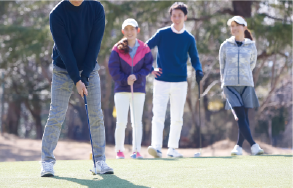
協会内の活動
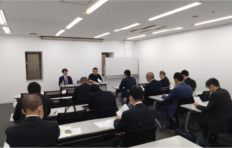
物件情報交換会
大阪・兵庫・京都の各部会や地区懇談会で、毎月のように物件情報（売買・賃貸）、成約事例、市況、経験談などの活発な情報交換を実施。
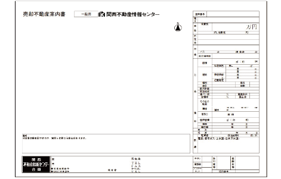
営業支援ツールの提供
不動産関連法令の改正に準拠したKRICオリジナルの「重要事項説明書」などの書式や、物件案内書、取引台帳、広告アイコンなどを会員専用のライブラリからダウンロードして活用可能。
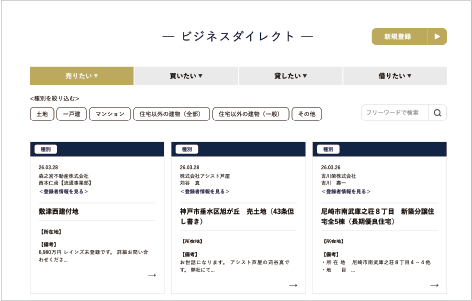
会員専用ページ
プロフィールを充実させて会社のアピールが可能。「売りたい」「買いたい」「貸したい」「借りたい」といった情報を投稿したり、不動産業界ニュースや各種書式集などを共有したりする交流の場を提供。
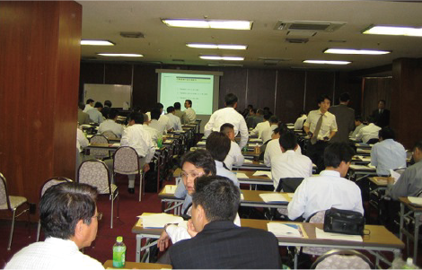
不動産ビジネス個別テーマ研究会
「ファンドビジネス」「シニアビジネス」「信託ビジネス」「販売促進」「相続」など、不動産ビジネスにおける様々なテーマでスクール形式の研修会が開催
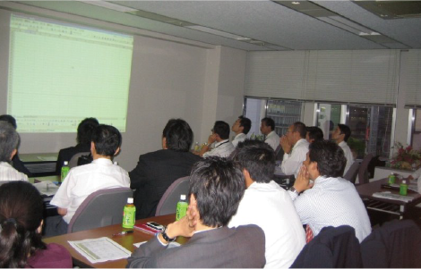
実力アップ講座
会員のスキルアップを目的とした講座を開講。
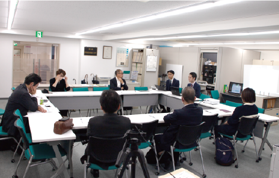
賃貸実務勉強会
現場に活きる賃貸実務スキルを共有できる勉強会を実施。
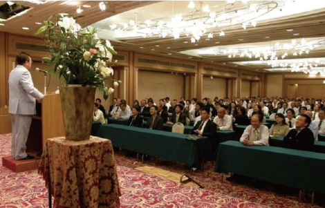
施設見学会や講演会
部会行事として開催。
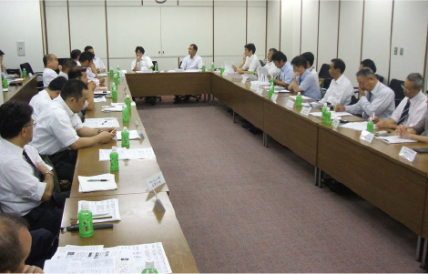
小規模勉強会
地区行事として、より地域に密着した勉強会を実施。
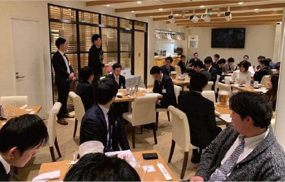
U-40
次代を担う若手会員の交流の場として、勉強会や情報交換会、懇親会を開催。
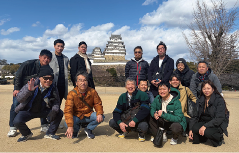
地区行事
納涼会、忘年会、旅行など、地域に根ざした親睦会を開催。これらの活動を通じて、会員間の信頼関係を深め、新たなビジネスチャンスの創出に繋げています。
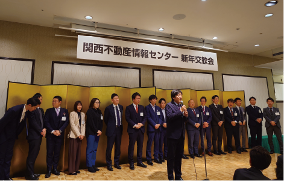
新年交歓会
新年を祝うために会員が集まり、功労団体表彰や地区表彰などの表彰式と新年互礼会を行います。
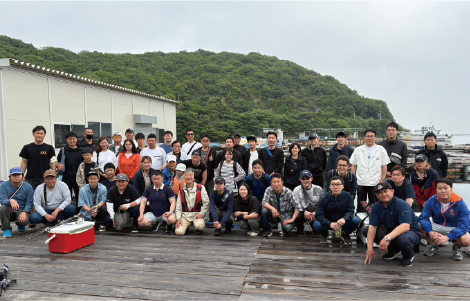
釣りっく
初心者向けの海上釣り堀釣り大会や中級者向けの船釣りを開催しています。釣りを通じて交流し、親睦を深めます。
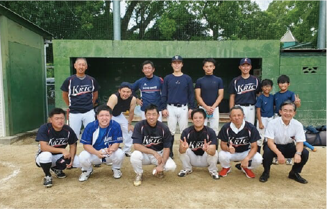
野球部
会員が野球を通じて交流し、チームワークの向上と親睦を目的に、練習会を行い、草野球大会に参戦しています。
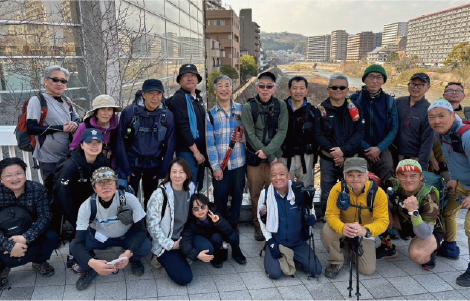
歩こう会
会員の健康増進と親睦を目的として、街中の名所旧跡巡りや低山ハイキングなど家族も参加できるイベントです。
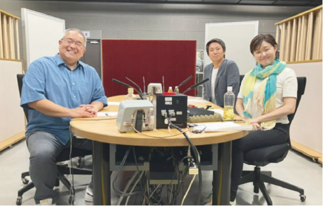
KIRCラジオ （会員紹介）
予備校講師の村瀬哲史さんとMBSアナウンサーがパーソナリティを務め、関西の街の魅力を再発見する人気バラエティ番組です。
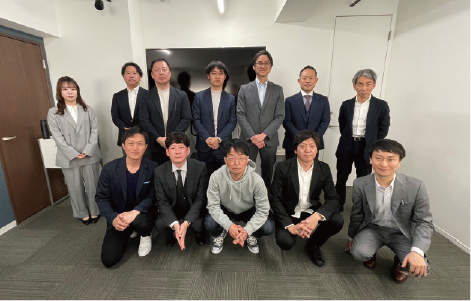
企業訪問企画『PASSION』
会員が他社を訪問し、業務や取り組みを学びながら情報交換や交流を深めることを目的とした企画です。
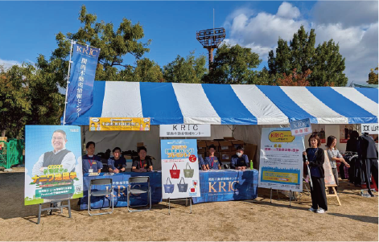
MBSラジオ秋祭り ブース出店
（参加者との交流・情報交換など）
参加者との交流・情報交換などを目的に、MBSラジオ秋祭りにブース出店。YouTube「不動産のこと、もっと教えて！KRICさん」の公開録音も行いました。
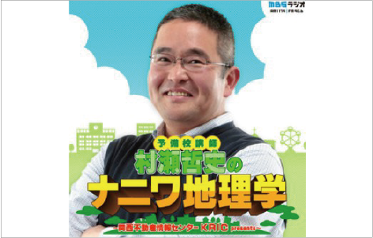
KRICラジオの続編
KRICプリゼンツ
MBSインターネットラジオ（ポッドキャスト）、
YouTubeにて公開
リスナーの住まいや土地、資産活用などの疑問に専門家が答える地域密着型のコンテンツ。MBSインターネットラジオ（ポッドキャスト）、YouTubeにて公開しています。

JOIN
入会を
お考えの方は
こちら
CONTACT
KRICについてのご質問やご相談は
お気軽にお問い合わせください。